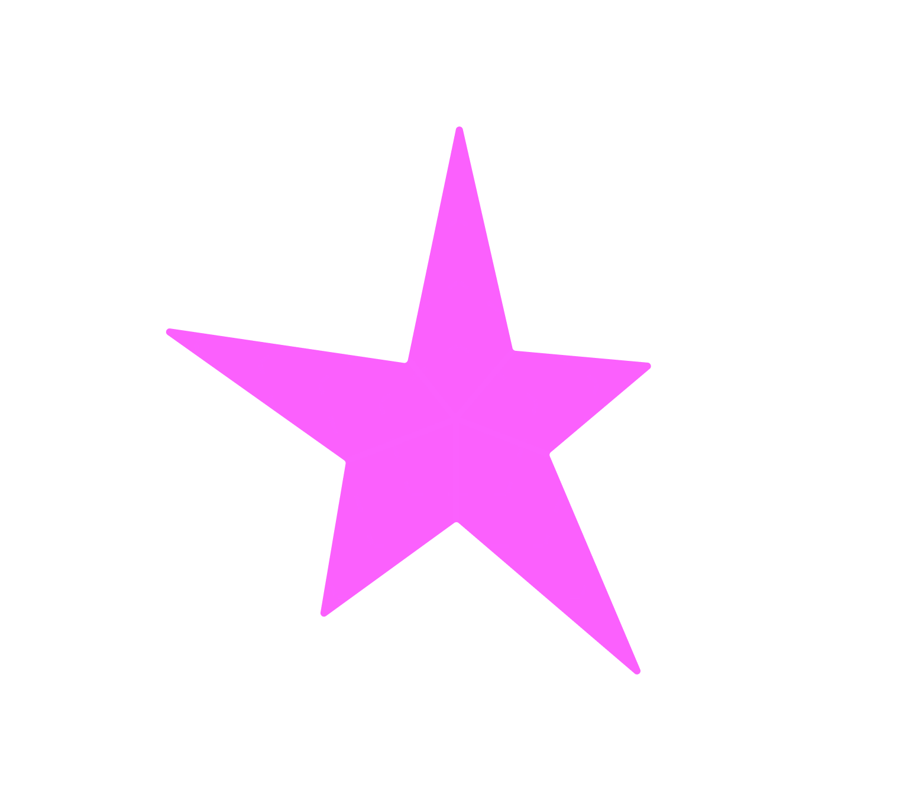

Date: Spring 2021
Project: UX+Industrial Design Collaboration Project
Team: Jamie Foster, Leah Raftis, Gagan Dhaliwal, Nicole Visentin, Stuti Duggal (ID: Bradley Staite, Henry Boy)
In a collaboration between UX designers (my team) and industrial designers, we surveyed and researched our own problem spaces, and landed on urban isolation and conservation. We created a modular garden system paired with an app to manage plants, connect with neighbours and flourish a new hobby designed for urban spaces.
My personal main focus were the high-fidelity screens and prototype. The designs themselves took several iterations and a lot of feedback from my team. It was so rewarding working with a team from a different design industry, and taking into account multiple mediums gave such a nuanced experience.